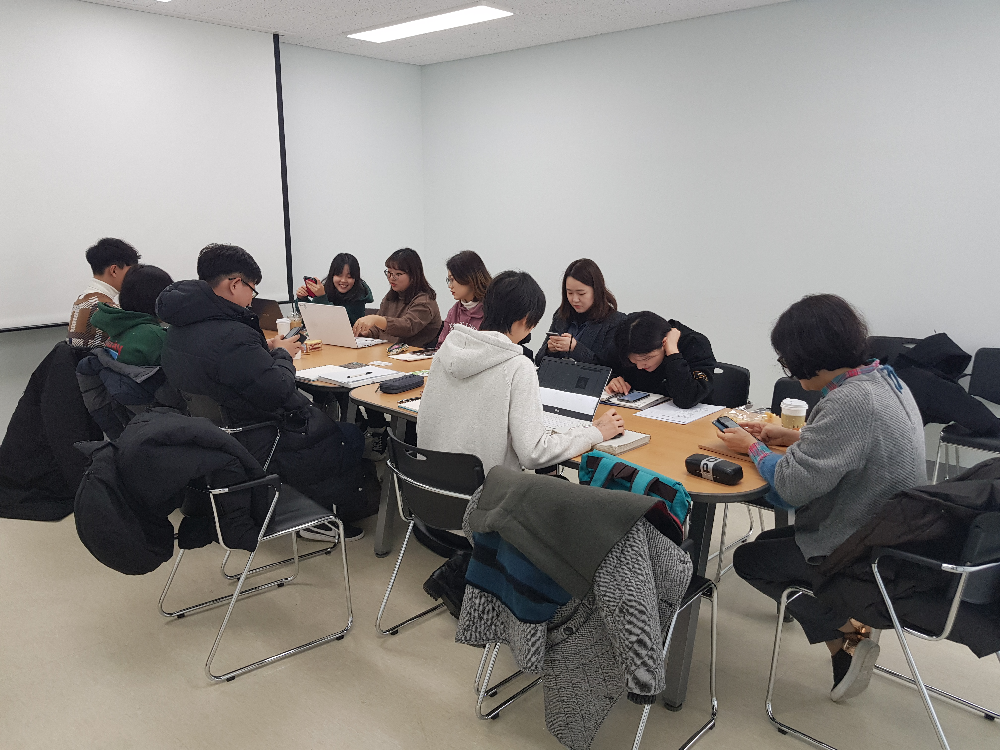
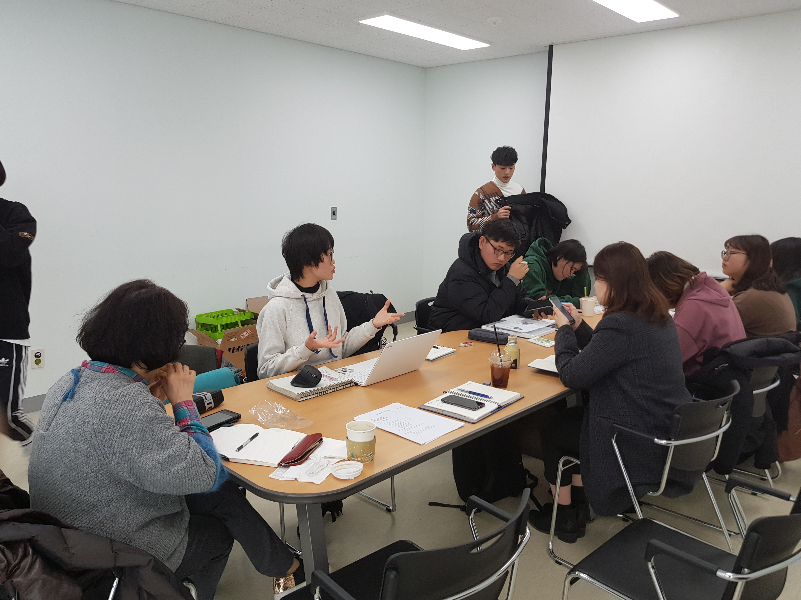

첫 번째, 인구가 적은 지역 즉, 외곽 지역에 교통 환경이 열악하군요. 외곽 지역 주민들의 편의를 위해 마을버스를 운행했지만 수요가 나지 않아 폐지된 노선도 있군요. 두 번째, 셔틀버스는 잘 운행되고 있나요? 아닙니다. 등교 시간에는 사람이 많아 셔틀버스를 타지 못하는 경우도 있으며, 하교 시간에는 셔틀버스를 운행하지 않아 일반 시내버스를 이용하고 있습니다. 마지막, 춘천 버스의 노선을 살펴봅시다. 버스 배차간격이 매우 길고 외곽 지역은 운행 횟수가 현저히 적군요. 게다가 필요 이상으로 노선도가 매우 깁니다. 통학버스가 소양강댐을 가는 노선은 이해할 수 없습니다.
이를 토대로 춘천이 가지는 문제점을 살펴보았습니다. 다음 시간엔 속도를 높여서 나가봅시다. 그럼 다음 시간에 봅시다. 안녕
 